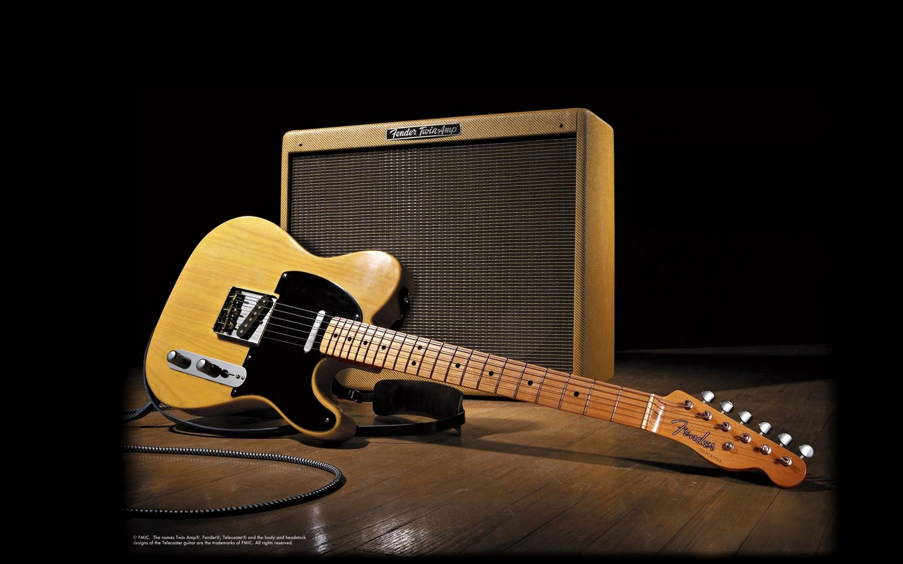

Guitar
The guitar is a fretted musical instrument that usually has six strings. It is typically played with both hands by strumming or plucking the strings with either a guitar pick or the fingers/fingernails of one hand, while simultaneously fretting (pressing the strings against the frets) with the fingers of the other hand. The sound of the vibrating strings is projected either acoustically, by means of the hollow chamber of the guitar (for an acoustic guitar), or through an electrical amplifier and a speaker.
There are three main types of modern acoustic guitar: the classical guitar (Spanish guitar/nylon-string guitar), the steel-string acoustic guitar and the archtop guitar, which is sometimes called a "jazz guitar". The tone of an acoustic guitar is produced by the strings' vibration, amplified by the hollow body of the guitar, which acts as a resonating chamber. The classical guitar is often played as a solo instrument using a comprehensive finger-picking technique where each string is plucked individually by the player's fingers, as opposed to being strummed. The term "finger-picking" can also refer to a specific tradition of folk, blues, bluegrass, and country guitar playing in the United States. The acoustic bass guitar is a low-pitched instrument that is one octave below a regular guitar.
Electric guitars, introduced in the 1930s, use an amplifier and a loudspeaker that both makes the sound of the instrument loud enough for the performers and audience to hear, and, given that it produces an electric signal when played, that can electronically manipulate and shape the tone using an equalizer (e.g., bass and treble tone controls) and a huge variety of electronic effects units, the most commonly used ones being distortion (or "overdrive") and reverb. Early amplified guitars employed a hollow body, but solid wood guitars began to dominate during the 1960s and 1970s, as they are less prone to unwanted acoustic feedback "howls". As with acoustic guitars, there are a number of types of electric guitars, including hollowbody guitars, archtop guitars (used in jazz guitar, blues and rockabilly) and solid-body guitars, which are widely used in rock music.